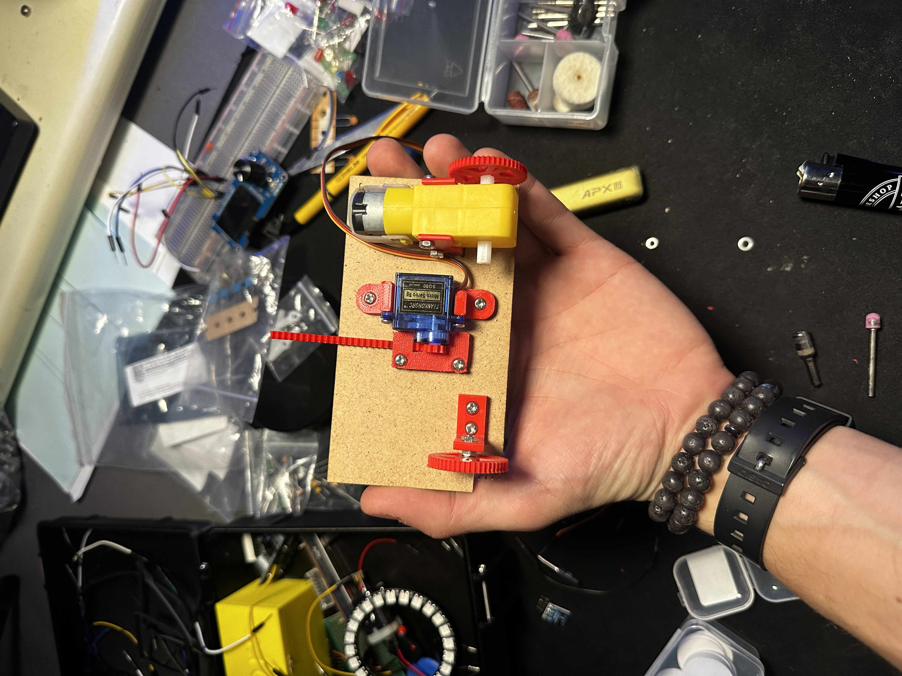

Mijn schoolcarrière was niet altijd helemaal het normale traject. Door verschillende invloeden ben ik meerdere keren van visie verandert zonder dat ik er altijd wel goed bij nadacht. Maar da's deel van het leven denk ik! Fouten maken en daaruit leren. Misschien daarom dat ik zo'n keuzestress heb nu..
Check binnenkort nog eens voor meer updates!